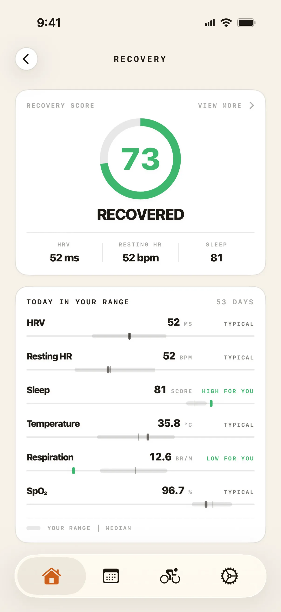
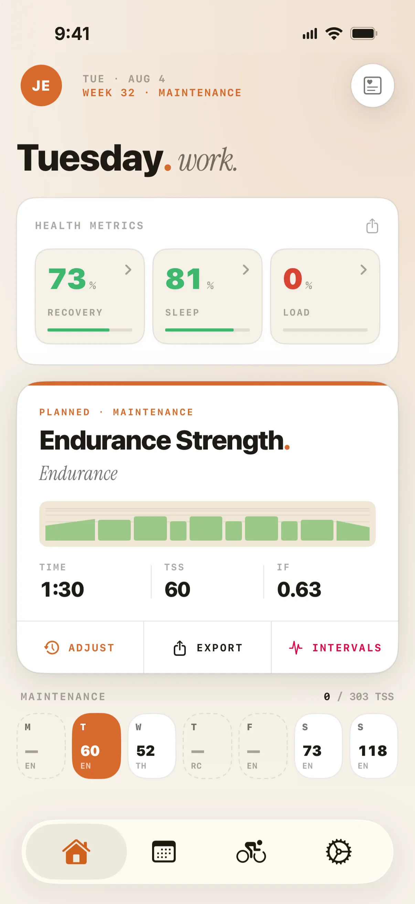
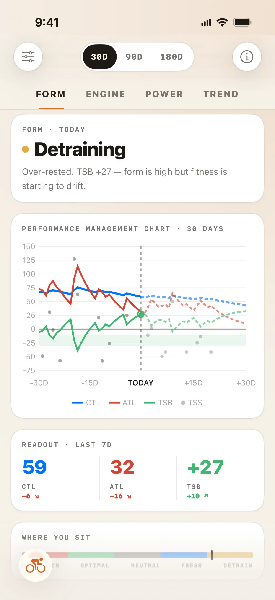
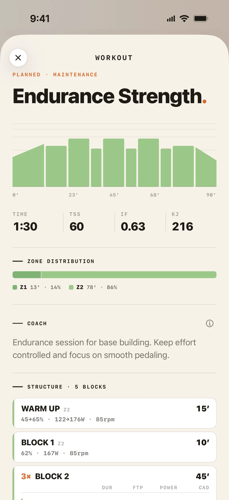
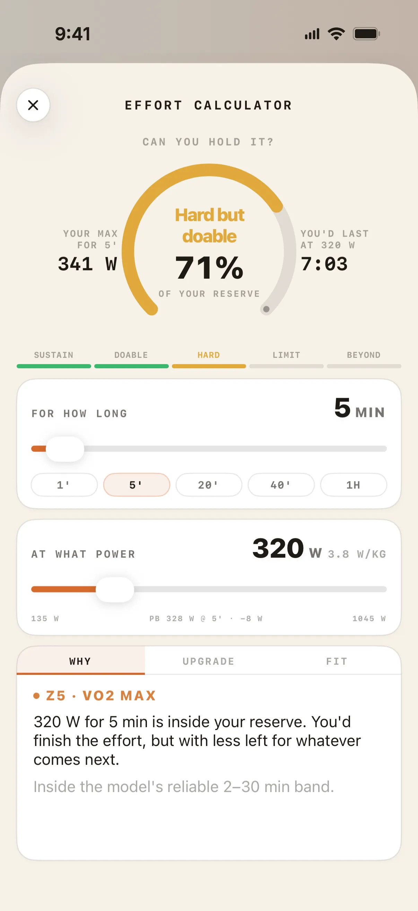
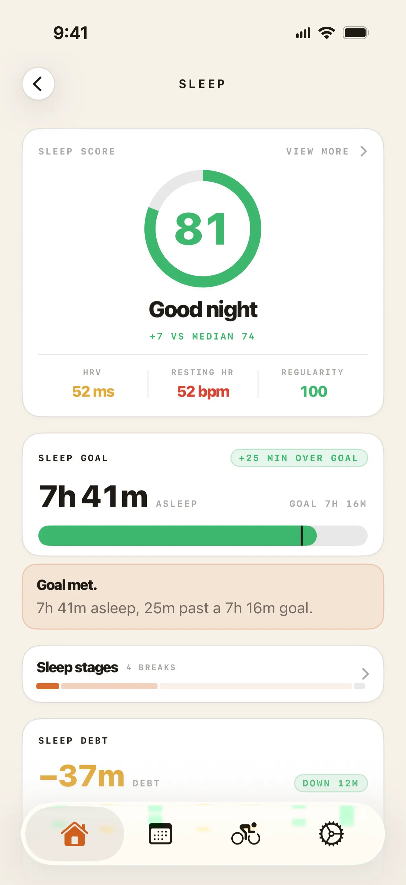
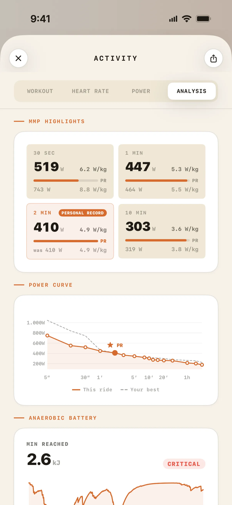
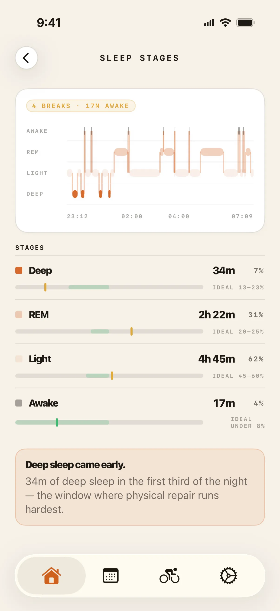
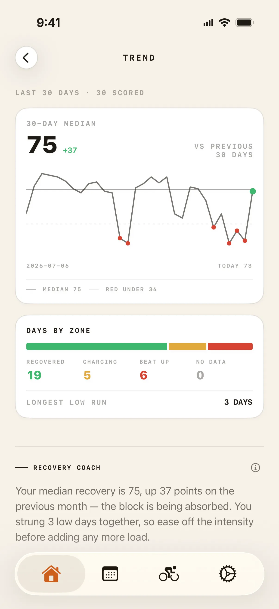
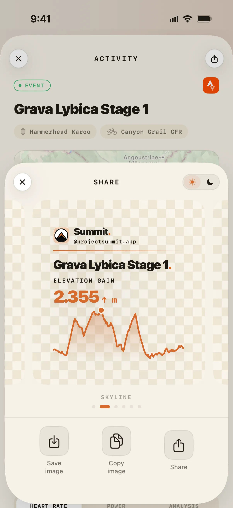

Adaptive training · Now on the App Store
A coach in the shape of an algorithm.
Every screen is built around what a serious cyclist actually needs to see — recovery, load, and the next session, all adapting in real time.



The product · 10 screens
See it in action.










How it thinks
Not AI. Not a chatbot. A coach in the shape of an algorithm.
Adapts to your body
It reads your recovery — both ways
Summit reads your HRV, resting heart rate and sleep from Apple Health. It eases the load when you're run down — and pushes when you're primed, to catch your best recovery windows. Both directions, like a good coach.
Adapts to your life
You set the time, Summit sets the plan
Tell Summit how much time you have each day. No window today? Nothing breaks. One opens up? It replans. And every recommendation traces back to a sport-science rule and your real data — never a black box.
Free forever
Your recovery and your sleep, free forever.
If you're a cyclist and already wear an Apple Watch, Summit reads what your watch measures every night and gives it back to you, interpreted. What other apps charge for every month — with the watch you already own.
Not a 14-day trial. It's the free tier.
- Daily recovery. HRV, resting heart rate and sleep, read from Apple Health — today's score and the detail behind it.
- Sleep, with the why. Not just the score: what kind of night you had, what explains it, and the full breakdown behind both.
- Your trend. Thirty days of recovery, so you read the direction and not just today's number.
- Every ride you do. Strava, Hammerhead Karoo and Apple Health import your rides on their own, with the route map, the stats and the elevation profile for each one — and a share card when it's worth showing.
- The shape of your week. The day's session type, its duration and the training phase you're in, on a calendar that carries your races, camps and holidays.
- Widgets. Recovery, sleep and load on the Home and Lock Screen, without opening the app.



Getting started
From download to your first plan.
Download and open it
Free on the App Store, iPhone with iOS 26 or later. No card, no trial clock.
Connect Strava and Apple Health
Your rides import automatically the moment you finish one. HRV, resting heart rate and sleep are read from Apple Health — from an Apple Watch, or any wearable that writes there, though only the Apple Watch writes the complete set.
Tell it your week
How much time you actually have, and the event you are building towards. That is what the plan is built around.
Ride. It keeps up.
Recovery and availability move the plan on their own. Miss a session, get sick, travel — the week is rewritten and the goal stays.
What's in the app
Everything a serious cyclist actually uses.
CTL / ATL / TSB — real time
Training load, fatigue and form tracked live across every session. The numbers serious cyclists actually use, always current.
Recovery that moves the plan
Your readiness doesn't just get a number — it changes the session. Intensity is adjusted before you even open the app.
eFTP & power curve
Continuous estimation via the CP2 model. No manual tests — your ride history does the work.
Advanced periodisation
Base, build, peak and taper blocks structured around your target events, with full adaptation to real-life availability.
Plan cascading
Miss a session. Get sick. Change plans. Summit rewrites your week — and keeps the goal in sight.
Race-day nutrition
Carb, fluid and electrolyte targets matched to your race duration and bodyweight — built around the products you actually use.
Built-in nutrition
Fueling, integrated — not bolted on.
Race day
Race-day nutrition planner
Carb, fluid and electrolyte targets matched to your race duration and bodyweight — built around the gels and drinks you actually use, not generic products. Know what to eat, and when.
On the roadmap
Training-driven nutrition plan
Daily fueling built from your planned and completed workouts — more carbs on hard days, lighter on recovery days — with daily recipes and a shopping list. In development: not yet part of the App Store release.
See it on the roadmap →Is this for you?
Made for the serious amateur.
Opinionated by design. Real training science. No shortcuts.
- You train with a power meter and take your FTP seriously
- You already use Strava and want your data to actually work for you
- You've outgrown generic plans and want something that adapts to your life
- You care about recovery as much as volume
- You want to peak for a target event — or simply keep getting faster, race or not
- You want nutrition integrated into your training, not bolted on
Questions
The things people ask before downloading.
Is Summit an AI app?
Depends on how you define AI. There's no large language model, no chatbot, and no generative content. Summit's engine is a deterministic algorithmic system: it follows codified sports science rules and produces predictable, explainable recommendations.
We think "algorithm" is more honest than "AI" here. Every decision Summit makes can be traced back to a specific rule or calculation — not a black box.
Do I have to pay to see my recovery and sleep?
No. If you ride and wear an Apple Watch — or any wearable that writes to Apple Health — your daily recovery score, your sleep score and the full breakdown behind both are free, for as long as you use Summit. Only the Apple Watch writes the complete set of metrics Summit uses, but another wearable still gives you a score from what it does write.
So is a good deal more: the 30-day recovery trend, the Home and Lock Screen widgets, automatic ride import from Strava, Hammerhead Karoo and Apple Health, and every ride's route map, stats and elevation profile. You can put your races, camps and holidays on the calendar, and see the shape of the day's session — its type, its duration and the training phase you're in. It's the free tier, not a trial that expires. Training load and power analysis, the heart rate and power detail on each ride, and the prescribed session itself are the parts that need Summit Premium.
Do I need an Apple Watch?
No. Summit reads HRV, sleep, and recovery data directly from Apple Health, so it works with whatever writes there.
In practice the Apple Watch is the only device that writes the full set Summit uses — heart-rate variability, resting heart rate, sleep, respiratory rate, blood oxygen and overnight wrist temperature. Another wearable gives you a recovery score from what it does write; the Apple Watch gives the complete picture. There is still no Summit watch app: the watch is the sensor, and the iPhone does the reading.
If you do wear one, the parts Summit builds from it — your recovery score and your sleep analysis — are part of the free tier.
Do I need a power meter?
For training load calculations, no. Summit uses heart rate and perceived exertion to estimate load when power data isn't available.
For structured workouts, yes for now. Workouts are currently prescribed in power zones (% FTP), so you need a power meter to follow them precisely. Roadmap Heart rate zone prescriptions are coming — this is a known priority.
What happens when I miss a session?
Summit detects it automatically and recalculates your plan. This is called plan cascading — skipped sessions, completed sessions, illness, travel, or any change in availability all trigger an automatic adjustment of what comes next.
You'll never be stuck following a plan that stopped making sense three days ago.
How do workouts get to my Garmin, Karoo or Zwift?
For a Hammerhead Karoo, Summit sends structured workouts straight to the head unit over a native, direct connection.
For Garmin, Zwift and MyWhoosh, Summit uses intervals.icu as a distribution hub — one connection reaches all three. You connect each once in Summit's settings, and from then on it's automatic.
How much does Summit cost?
Summit is free to download, and the free tier isn't a trial: your daily recovery score and your full sleep analysis stay free for as long as you use the app.
Summit Premium adds two tiers: Pro (detailed training analysis — training load, power and per-activity analysis) and Elite (full platform access, including the adaptive plan and new features as they ship, plus priority support).
Pro is €7.99 a month or €63.99 a year (€5.33 a month paid annually); Elite is €14.99 a month or €119.99 a year (€10.00 a month paid annually) — paying yearly saves about a third either way. These are the Spanish App Store's listed prices in euros, VAT included, checked 7 August 2026 — Apple sets pricing per storefront, so yours may differ. Full breakdown and caveat on the Plans page.
Is Summit available on Android?
Not yet. Summit is iOS-first and available on the App Store now. Android is on the roadmap for 2027, but iOS is the focus for this release.
If you're on Android, follow us on Instagram — we'll share progress and let you know the moment it's ready.
Connects with your kit
Works with the platforms you already use.
No manual imports. Rides come in, structured workouts go out — direct to your Karoo, or via intervals.icu to Garmin, Zwift and MyWhoosh — and recovery flows automatically.
A native, direct line to your Karoo — plan a session and it lands on the head unit, ready to ride.
Rides import automatically the moment you finish. No syncing, no uploads.
Push structured sessions to Garmin, Zwift and MyWhoosh in one tap.
HRV, resting heart rate, sleep and body temp — read securely, on device.
● Available now · iOS
Ride smarter, starting today.
Summit is on the App Store now. Download it, connect Strava, and let the plan start learning you.
Questions before you download? Write to team@projectsummit.app — Jordi, who builds Summit, reads and answers it himself. No bots, no ticket queue.